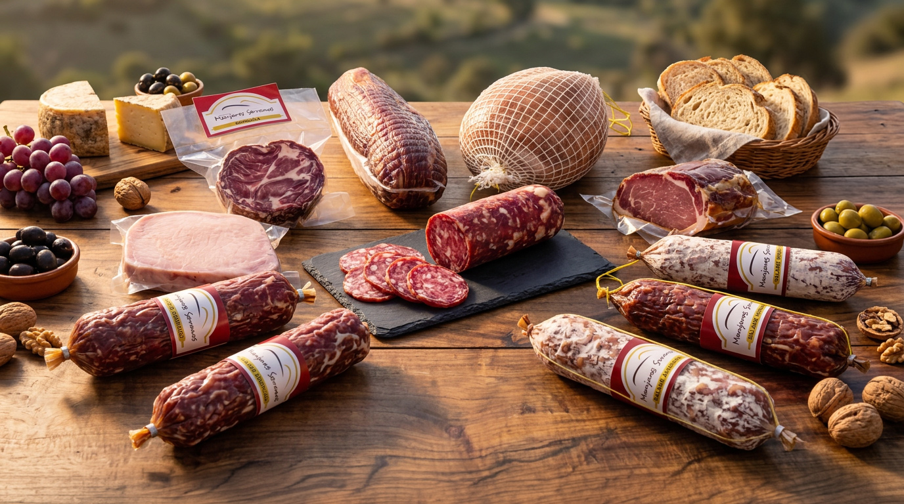
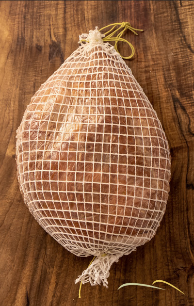
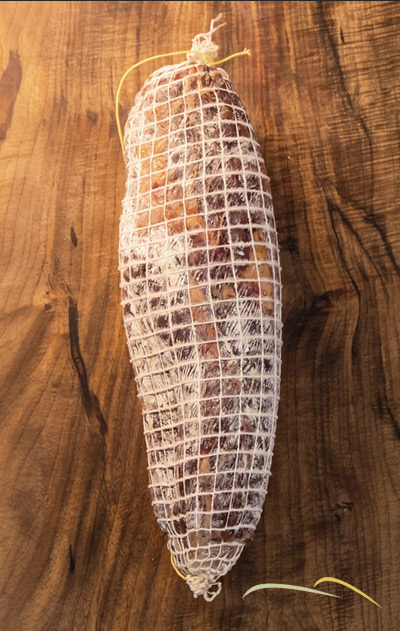
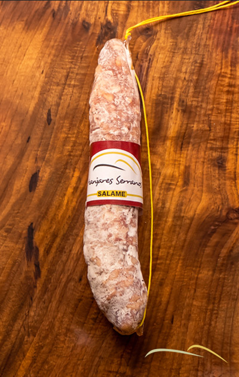
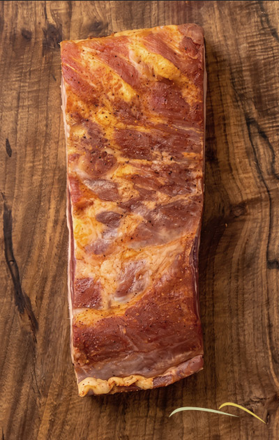

Empresa familiar
Más de 25 años en José de la Quintana, con la misma familia al frente de cada lote.
Una empresa familiar de José de la Quintana, Córdoba, que hace más de 25 años elabora embutidos y salazones.

Sierras de CórdobaManjares Serranos es una empresa familiar de José de la Quintana, Córdoba. Desde hace más de dos décadas elaboramos embutidos y salazones con una regla simple: cada lote debe salir igual de bien que el anterior.
Para lograrlo combinamos dos mundos. En planta trabajamos con maquinaria de última tecnología para el picado, el embutido y el envasado al vacío, y con cámaras de secado que controlan la temperatura y la humedad en cada etapa.
Las recetas, en cambio, son las de siempre: carne porcina seleccionada, sal, especias medidas a mano y el tiempo de secado que cada pieza necesita.
El resultado es un producto de calidad profesional, con trazabilidad completa desde el corte hasta tu mesa, y con el sabor artesanal de una receta familiar.
Comprás directo al productor: retirás en planta o te lo entregamos en Córdoba.
Conocé cómo elaboramos cada piezaAsí trabajamos en planta, de la selección de la carne al envasado.






Más de 25 años en José de la Quintana, con la misma familia al frente de cada lote.
Recetas de siempre elaboradas con maquinaria de última tecnología y cámaras de secado con control de temperatura y humedad.
Establecimiento 302 con RNPA 04058778. Cada pieza se puede seguir por lote, desde el corte hasta tu mesa.
Comprás directo al productor: retirás en planta o te lo entregamos en Córdoba capital.
Contacto
Escribinos por WhatsApp y te asesoramos sobre piezas, cantidades y conservación. Coordinamos la entrega en Córdoba capital o el retiro en planta.
Escribir por WhatsApp